あらすじ
Season 1 第一話 ～Trigger～
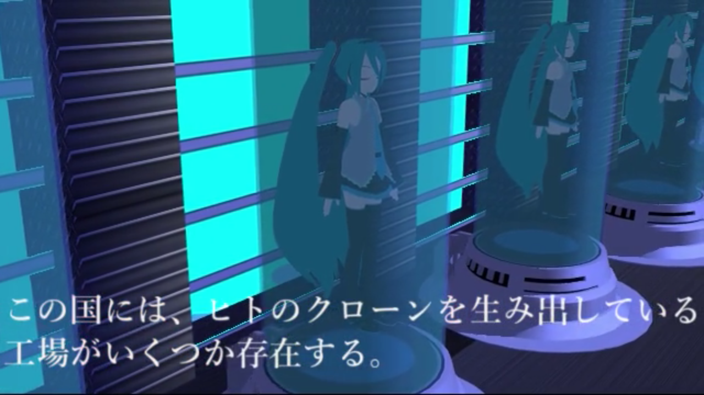
とある研究施設で造られたクローンたち。そこで爆発事故が起き、クローンのうちの一人のクローンが逃げ出した。 逃げる途中でボートに落下した彼女は、町中の河原に流れ着き、そこに偶然通りかかった鏡音レンに助けられた。 クローンはミクと名乗り、レンの家に転がり込んだ。 レンとファミレスに行ったミクであったが、そこには彼女を狙う怪しい影が見え隠れしていた。 ミクは何者なのか？彼女が生まれた意味は？レン達は、彼女をめぐる壮絶な戦いに巻き込まれていく・・
動画リンク(ニコニコ動画)Season 1 第二話 ～決意～
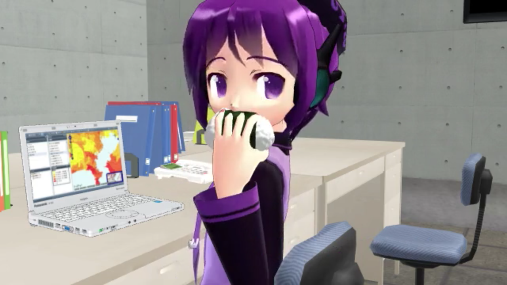
レン達は、ミクの身柄を狙うLilyと名乗る刺客の急襲にあう。 しかし何とミクの腕が剣に変化し、彼女との戦闘に突入、何とか撃破した。 その時、ハイペリオンと名乗るクローン実験根絶を目的とした組織が、レン達の前に現れた。 魔理沙は特殊能力を持つミクのことを「リベレーター」と呼んでいた。 Lilyについては、ハイペリオン所属の霧雨魔理沙も知らないというが・・
動画リンク(ニコニコ動画)Season 1 第三話 ～危機～
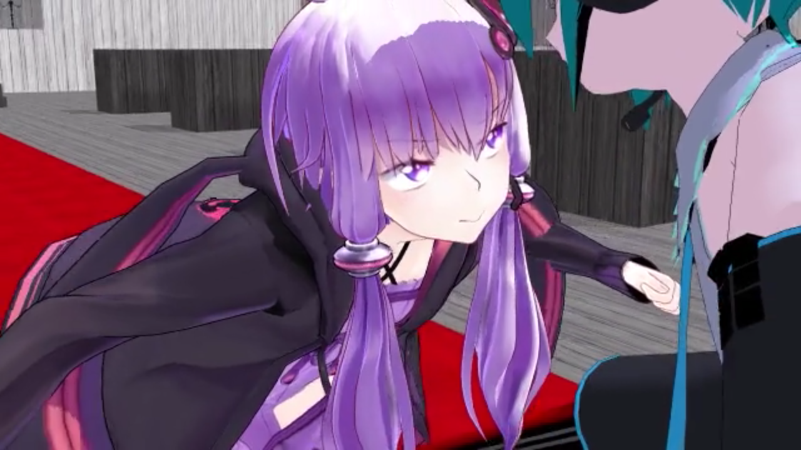
ハイペリオン事務所から帰宅したレンとミク。 しかし、パーカー姿の人物にリンが攫われてしまった。 犯人探しのために廃墟群に向かったレン達は、謎の少女ONEと出会う。 そして、彼女に連れられて行った酒場で、犯人の手掛かりを得る。 手掛かりを元に、廃墟群の教会へと向かう彼らであった。
動画リンク(ニコニコ動画)Season 1 第四話 ～激動～
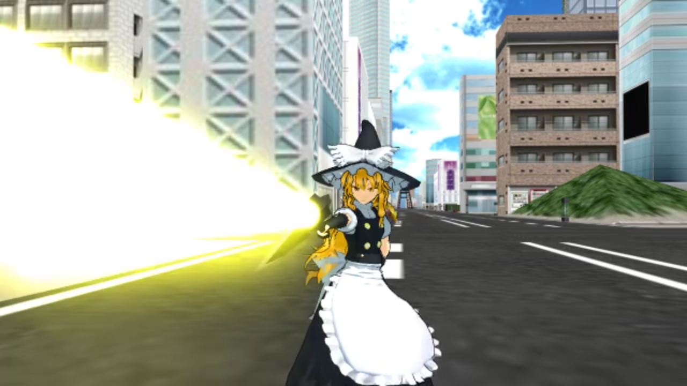
ミクと夕飯の買い出しに向かったリン。 その帰り道、ミクを付け狙う組織からの奇襲に合う。 絶体絶命かと思われた瞬間、ハイペリオンが現れ、街全体を舞台とした壮絶なロードバトルが始まる。
動画リンク(ニコニコ動画)Season 1 第五話 ～開幕～
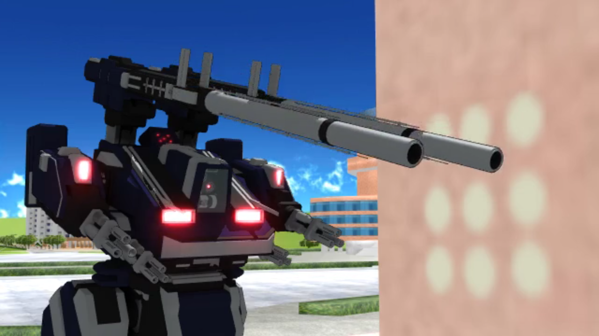
レンたちの家の前に忍び寄る謎の影。 それはミクを作った組織の研究員であったが、偶然通りかかったデフォ子が何とか彼女を退けた。 次の日、失踪した魔理沙を探すデフォ子が再びレン家を訪ね、レン達一行はハイペリオン事務所へと向かう。 そこで明かされるリベレーターやミクの誕生の秘密に、レンの顔は険しくなる。 そのような中、魔理沙がミクを開発した組織「スアロキン」に単独で乗り込んだことが分かった。 その先でレンたちを待ち受けていたのは・・
動画リンク(ニコニコ動画)Season 1 第六話 ～逆転～
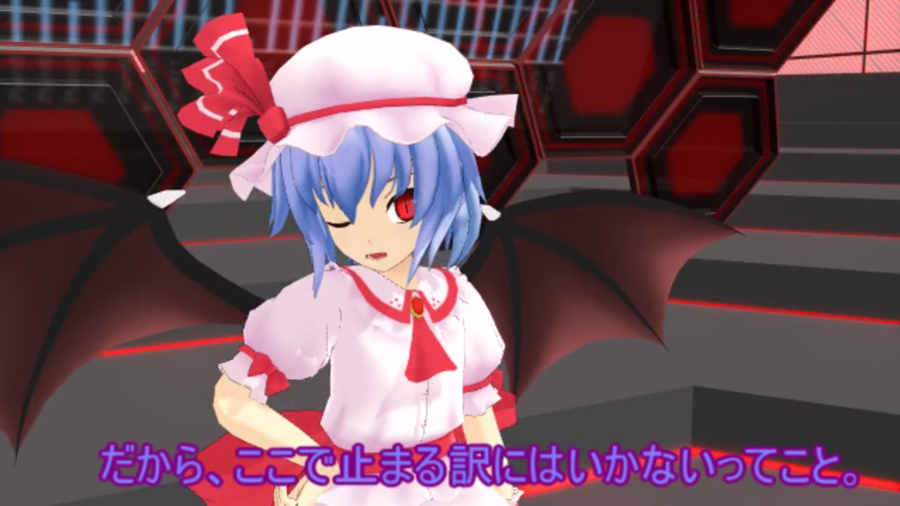
スアロキンの研究所への侵入に成功したレン達。 その先で待ち受けていたのは、ミクを作ったカテゴリーSの姉妹であった。 彼女たちはミクのことを Code 39 と呼んでいた。 彼女たちによって明かされた、ミクの能力の正体は？ ミクが生みだされた目的は？ そして、この一連の騒動の引き金は？ ミクをめぐる戦いも、ついにクライマックスを迎える！
動画リンク(ニコニコ動画)Season 2 第一話 ～オリジナル～
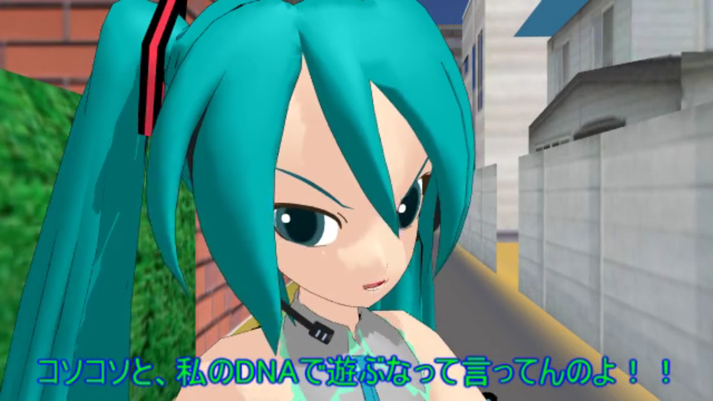
ミクの件がひと段落して自宅で休んでいたレン達の前に、ミクと同じ姿の少女が現れた。 彼女は、何とオリジナル・初音ミクだった。 彼女が来た理由、そしてレン達に忍び寄る刺客の影は、新たな戦いの始まりを示唆していた。
動画リンク(ニコニコ動画)Season 2 第二話 ～敵～
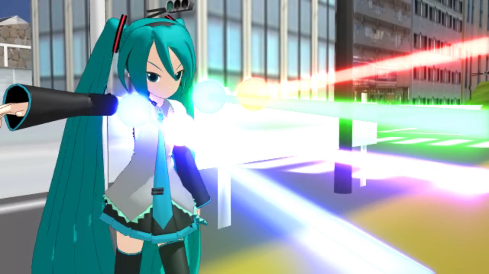
レンとミクはハイペリオンメンバーとなった結月ゆかりと偶然出会った。 彼らの前に現れたのは、アリス・マーガトロイドと名乗るリベレーターであった。 彼女の目的は Code 39 の回収らしい。 彼女は何者なのか？ そして、レンたちは一体何と戦っているのか？
動画リンク(ニコニコ動画)Season 2 第三話 ～国～
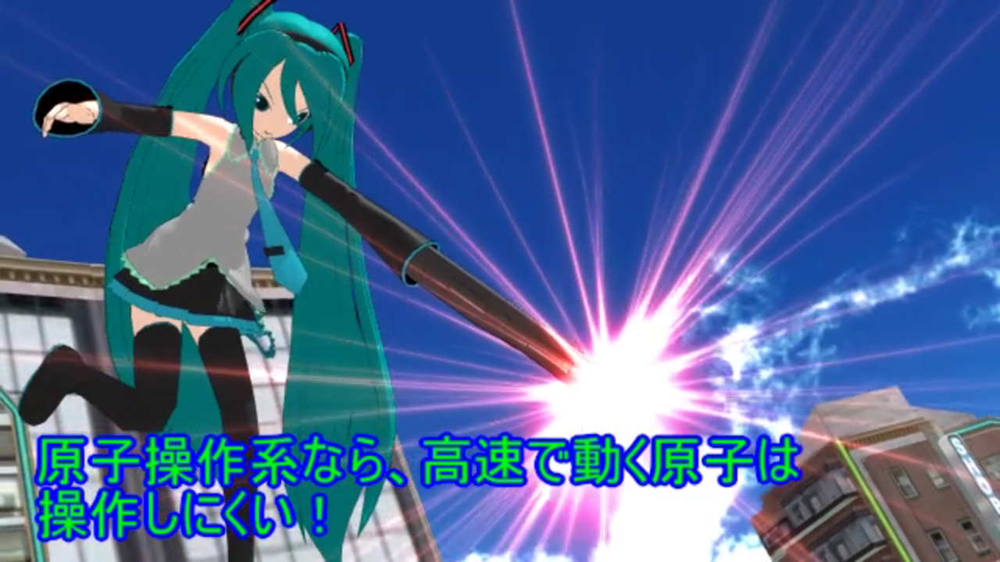
レンのもとに来た、魔理沙からの一本の電話。 彼女の口から出た「戦っている相手」は、あまりにも強大なものであった。 一方で、オリジナルはカモメ町にて、MEIKOと名乗るリベレーターと出会い、交戦する。 MEIKOを差し向けた組織とは？ そして、オリジナルたちが戦う相手との関連は？
動画リンク(ニコニコ動画)Season 2 第四話 ～connection～
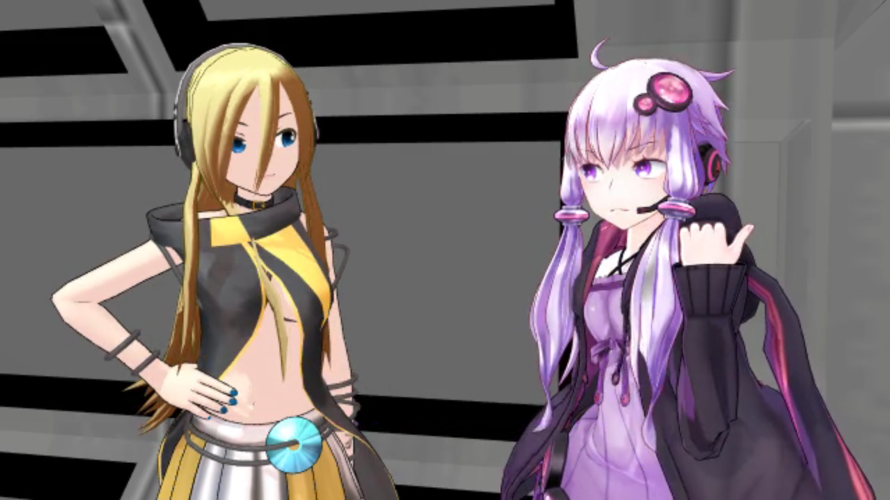
電場・磁場を操る能力を持つLilyとゆかり。 異様な電磁波を感じ取った彼女たちがたどり着いたのはガレキ町。 その電磁波を辿っていくと、広大な地下空間に行き着いた。 調査を進めていくと、なぎさ電力や波音自動車など複数の企業の名前が浮上する。 それら企業は、彼女たちが戦う相手と関係はあるのか？ そして、この地下空間が造られた目的は？
動画リンク(ニコニコ動画)Season 2 第五話 ～黒幕～
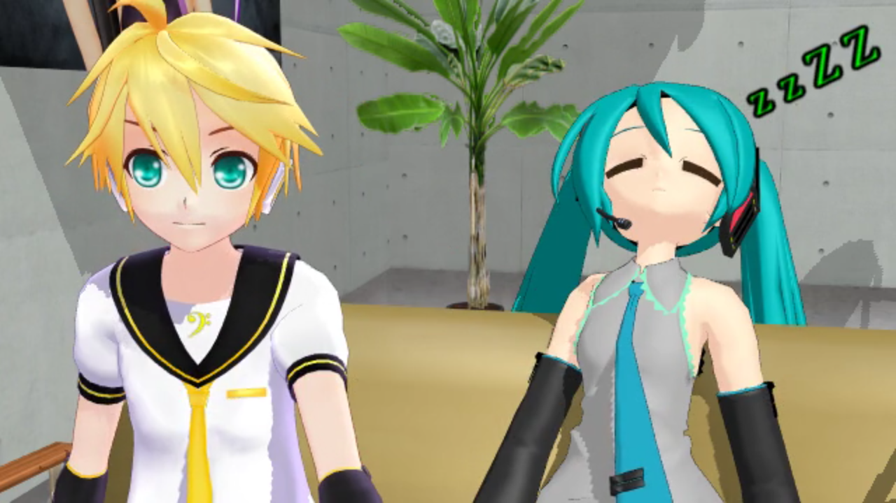
魔理沙に呼び出されたレン一行。 そこで聞かされた、一連の組織と Code 39 を製造した元凶の関係。 その結果浮上した黒幕は国防省という、これまで対峙した企業や研究所とは比べ物にならないほど強大なものであった。 元凶を打ち倒すため、国防省の研究所に向かおうとしたレンたち。 しかし、彼らが思うよりも早く、事態はすでに動きだしていた。
動画リンク(ニコニコ動画)Season 2 第六話 ～terminal～
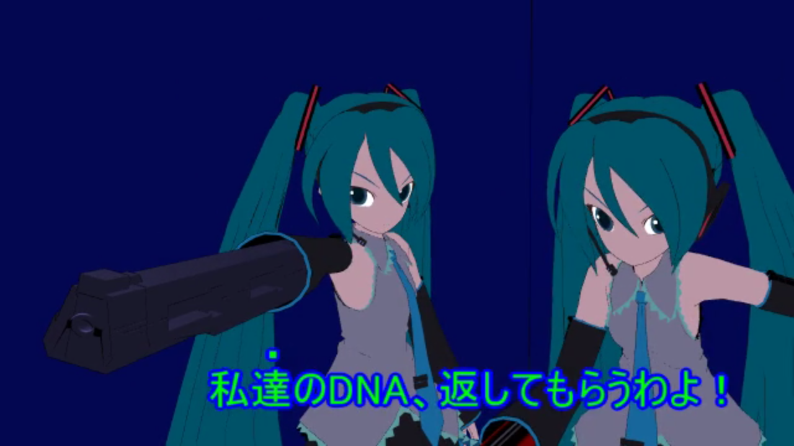
国防省の研究所にたどり着いたレン一行とハイペリオン。 そこで待っていた敵は、これまでとは一線を画す強大な戦力を持っていた。 ハイペリオンの総力を結集することで、何とか先に進むことができたレンとミクたち。 その先で待っていたのは、国防大臣のギャラ子。 ミクとオリジナルの尊厳をかけた最終決戦が始まった。 一方で、総力戦を挑んだハイペリオン一行の戦況は芳しくなく、追い詰められていた。 そんな彼女たちのもとに、驚くべき人物が現れる。 この戦いはどのような結末を迎えるのか？ そして、Code 39 を含めた初音ミクのクローンが製造された、本当の目的とは？
動画リンク(ニコニコ動画)Season 3 第一話 ～Liberator～
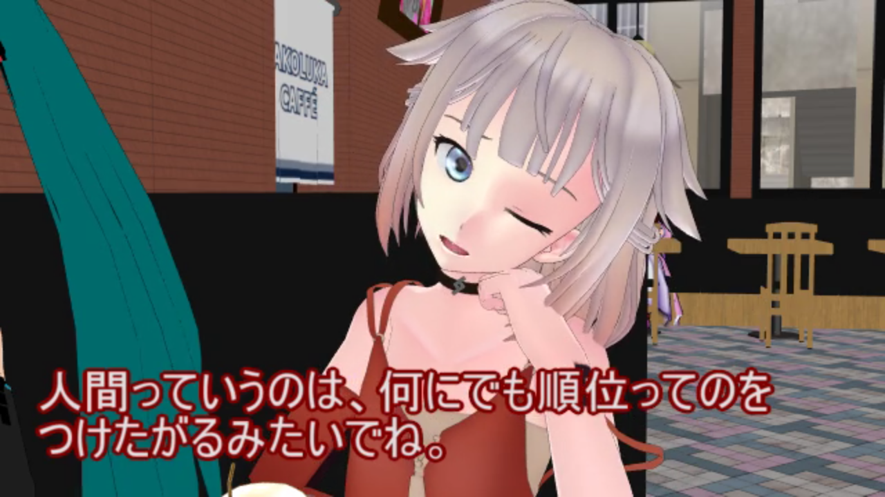
一連の騒動が収まって、つかの間の休息をとっていたレンとミク達。 彼らの前に、謎のカテゴリーAリベレーターが現れた。 彼女に苦戦するミクであったが、そこにかつてガレキ町で出会った少女、ONEが乱入。 彼女は、突如現れた刺客をいともたやすく撃破してしまった。 ONEの正体は一体何なのか。 そして、謎のリべレーターの登場は、これまでにないスケールの戦いの始まりを示唆していた。
動画リンク(ニコニコ動画)Season 3 第二話 ～再会～
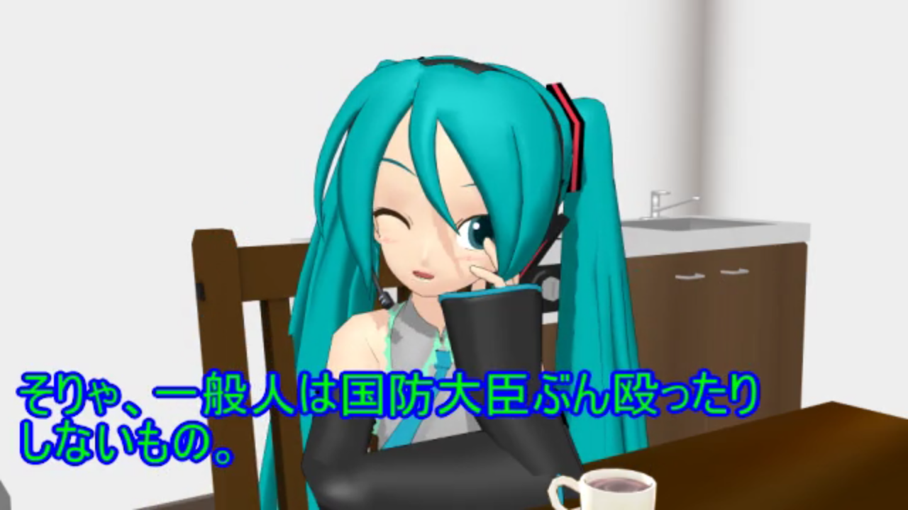
ONEが明かしたのは、37人存在するカテゴリーSには一人ひとり順位がつけられており、ONEがその中のトップ、1st カテゴリーSであるという衝撃の事実。 そして、かの軍事大国フォルティア公国がミクをめぐって何かしらの動きを見せているという事実であった。 そんな事実に翻弄されつつも普段通りの生活を送っていたレンは、オリジナルとの再会を果たし、買い出しののち彼女の家で一息つくことにした。 しかし、一見平和な日常の裏では確実に事態は進行していた。
動画リンク(ニコニコ動画)Season 3 第三話 ～Purpose～
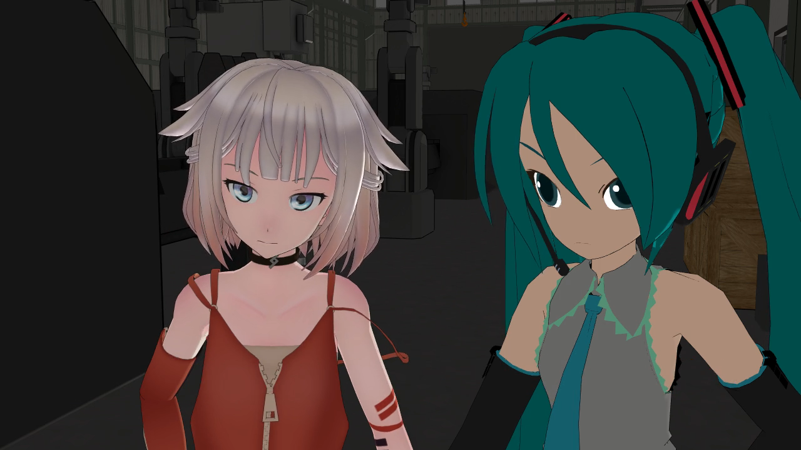
銀行での予定を終え、帰宅しようとしていたオリジナル。 そんな彼女の間近に着弾した一つの銃弾。 刺客から逃れて体勢を立て直すため、彼女はなぎさ工業地帯の中の工場に入った。 そこで現れたのは、依神紫苑をリーダーとする、蟷螂部隊(オプティカルマンティス)と名乗る光学迷彩を駆使する戦闘部隊。 彼女たちの戦闘の行方は？ そして、蟷螂部隊がオリジナルを襲撃した目的とは？
動画リンク(ニコニコ動画)Season 3 第四話 ～message～
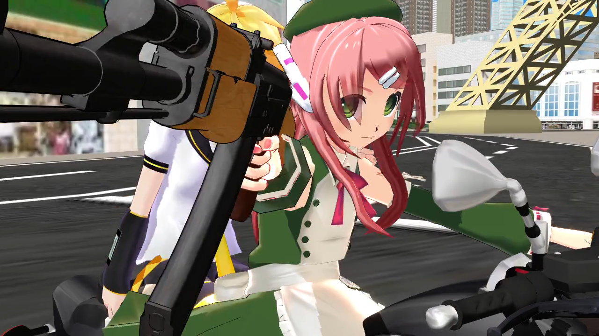
確実に計画を進めるフォルティア公国。 そのような中でも、レン・リンたちの平和な日常はかろうじて形を保っていた。 リンが銀匙町カフェで一息着いていると、ハイペリオンのLilyと再会した。 そんな彼女たちの前に、数メートル級の二足走行型機兵が急襲する。 サブマシンガンの連射やLilyの能力をものともしない機兵を前に絶体絶命のリンとLilyであったが、間一髪で割り込んだ幽香とゆかりにより、事なきを得る。 一方、レンとミクも別の機兵の襲撃を受け、モモ・デフォ子とともに行動していた。 さらにオリジナルやONEも機兵と戦闘中であり、なんと銀匙町には数機どころではない大量の機兵が送り込まれていることが明らかとなった。 ここまでの機兵の大群は何のために送り込まれたのか？ レンたちの住む国の中でも有数の大都市銀匙町を舞台とした、超大規模な能力＆ロードバトルが開戦した。
動画リンク(ニコニコ動画)Season 3 第五話 ～message～
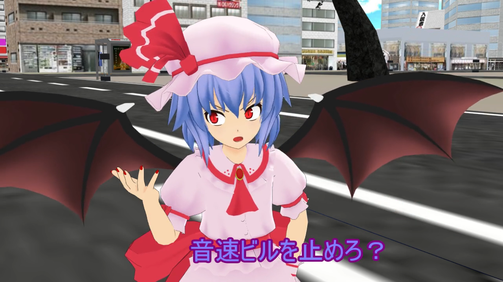
広大な銀匙町で開戦した大規模戦闘。 その規模はビルを丸ごと吹き飛ばすレベルにまで発展していたが、何とか機兵部隊を退けることに成功した。 しかし、大規模戦闘に気を取られていたうちに、ミクの姿が消えていた。 彼女はどこに行ってしまったのか？
動画リンク(ニコニコ動画)Season 3 第六話 ～居場所～
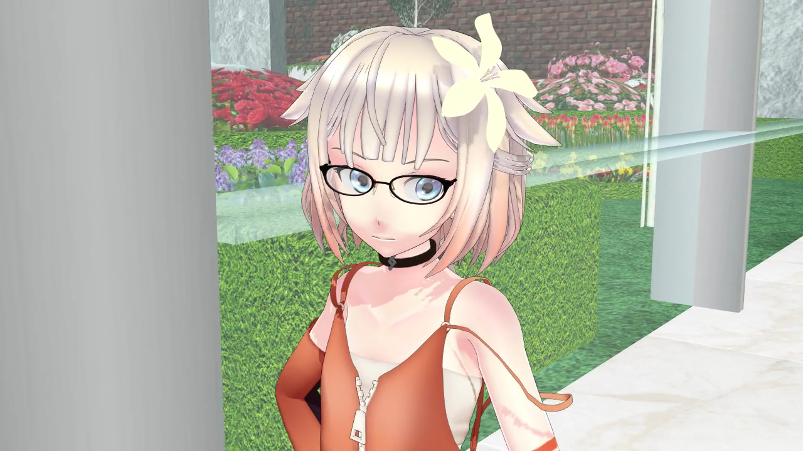
ミクの失踪について調査する中で浮上した、モナーク製薬というフォルティア公国の製薬会社。 失踪についての情報を得るために、レンとONEはモナーク製薬の研究所へと潜入した。 そこで手に入れたミク失踪に関する情報とは？
動画リンク(ニコニコ動画)Season 3 第七話 ～仲間～ (前編)
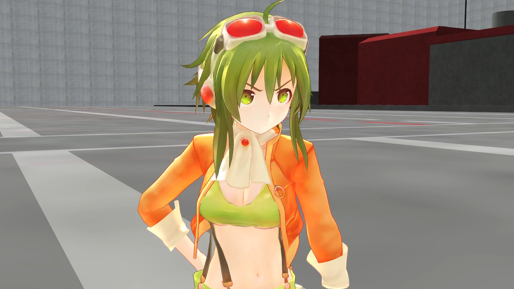
ミク奪還のため、フォルティア軍第三駐屯基地に向かうレン一行。 そこでは、銀匙町で対面した機兵よりも強力な戦闘兵器や規格外のリベレーターが彼らを待ち受けていた。 さらに、駐屯基地は周囲を分厚い壁で囲まれたまさに鉄壁の要塞。 彼らは駐屯基地に侵入し、ミクを奪還することができるのか？
動画リンク(ニコニコ動画)Season 3 第八話 ～仲間～ (後編)
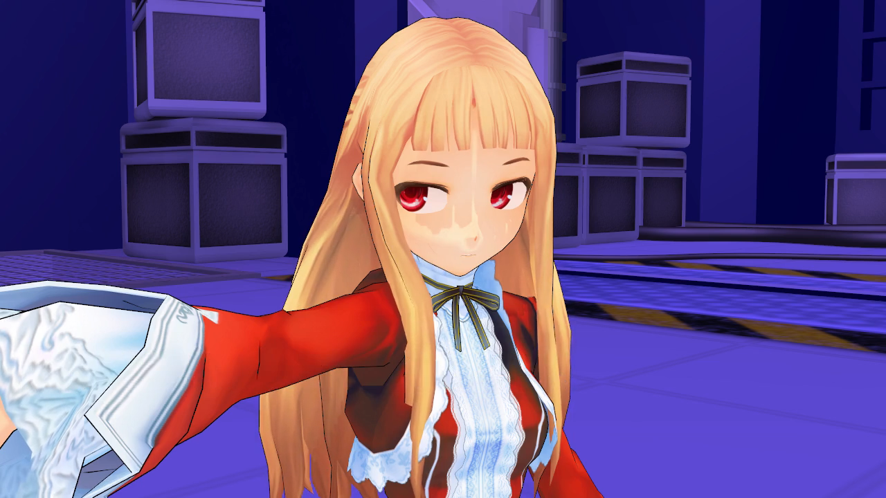
奮戦の結果、何とか基地内に侵入することができたレンとONEの一行。 その先で待ち受けていたのは、フォルティア公国軍大尉のレア。 彼女の部屋には、とらわれたミクの姿があった。 レアがミクをさらった目的は、国家の存続にかかわる壮大なものであった。 ONEたちとレアの戦いの行く末は？ そして彼女たちを待ち受けていた、予想外の事態とは？ 国家の存亡をかけた戦いが始まった。
動画リンク(ニコニコ動画)Season 4 第一話 ～NewType～
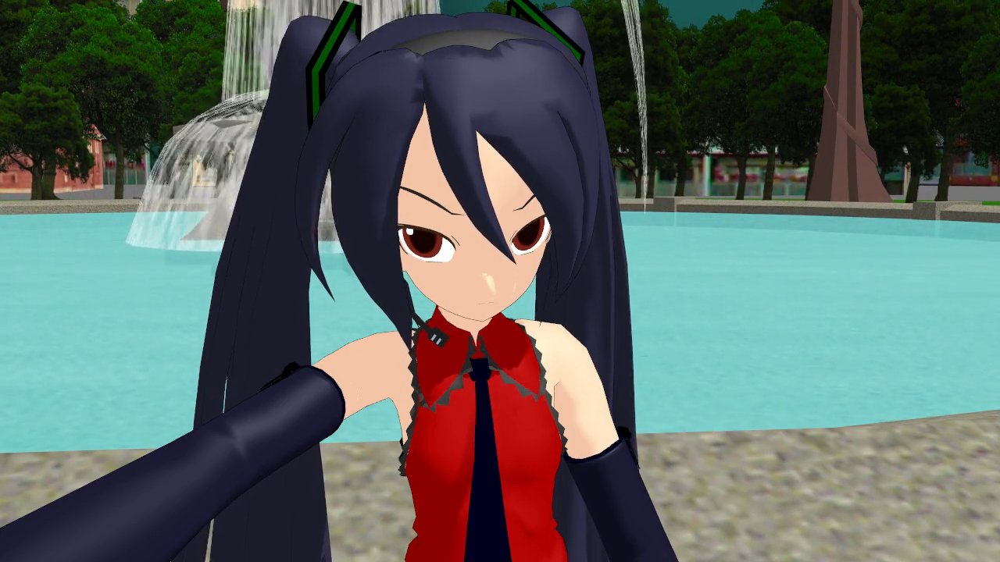
とある公園で一息ついていたレンは、オリジナルと久しぶりに再会した。 近況について話していると、地面が揺れるレベルの衝撃が発生。 その原因はミクやオリジナルと酷似した、ブラッドカラーの髪と服装の人物であった。 その容姿から新型クローンであるとオリジナルは予測した。 彼女は言葉少なにオリジナルたちに襲い掛かるが、何とか戦闘不能にすることができたと思われた。 しかし、予想に反して新型クローンは息を切らしながらも立ち上がる。
動画リンク(ニコニコ動画)Season 4 第二話 ～超越～
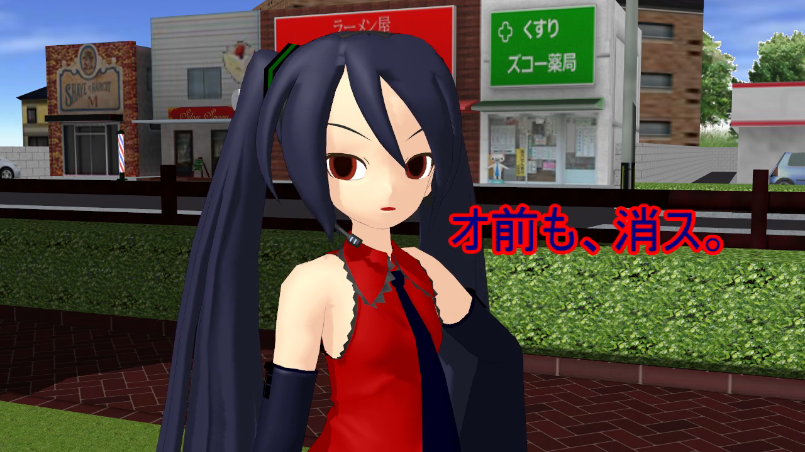
オリジナルを襲撃した新型クローンが、ONEのもとにも現れた。 ONE は 1st カテゴリーSであるににもかかわらず、何と新型に敗れてしまう。 しかし、とどめを刺すことなく新型は離脱した。 そんな彼女の行動に違和感を持ったONEは、倒れた拍子に手をついた場所にとある薬が落ちていることに気が付く。 その薬が新型の者であると推測したONEは、レミリアにその分析を依頼する。 その分析結果は、カテゴリーSどころかリベレーターそのものの常識をひっくり返しかねないものであった。
動画リンク(ニコニコ動画)Season 4 第三話 ～confidence～(前編)
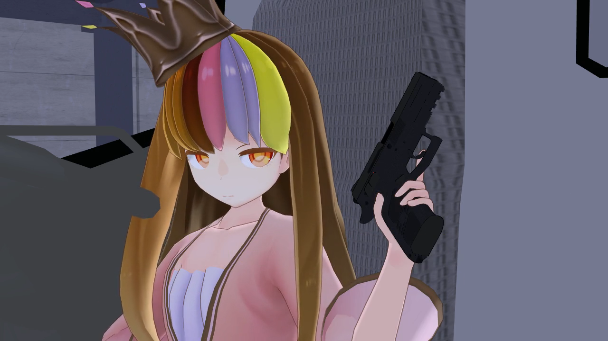
デフォ子はカモメ町での調査中に、ギャラ子と出会った。 それと同時に最近国内展開された、フォルティア公国の清涼飲料水メーカー、FDR のトラックを発見する。 新型の件と何かしらの関係があると推測したデフォ子は、ギャラ子の空間接続(トランスポイント)によってトラックに乗り込み、FDR の工場での潜入調査を開始する。 そこで手に入れた情報は、フォルティア公国につながる手がかりとなりうるのだろうか。
動画リンク(ニコニコ動画)Season 4 第四話 ～confidence～(後編)
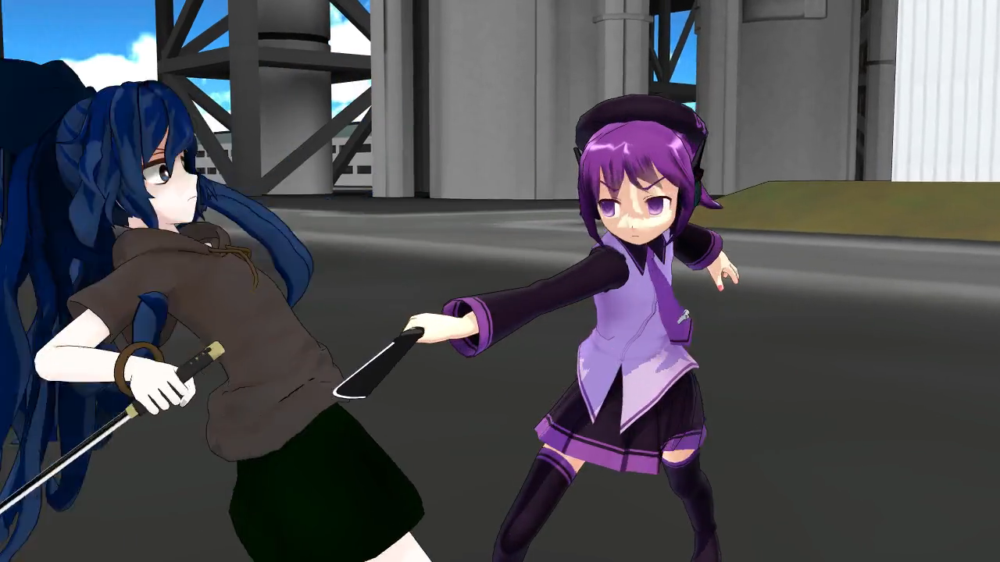
FDR の飲料工場に潜入し、情報を手に入れたデフォ子とギャラ子。 帰ろうとした彼女たちの前に現れたのは、miki と名乗るリベレーターと、かつてオリジナル & ONE と交戦した依神紫苑であった。 果たしてデフォ子とギャラ子は無事に情報を持ち帰ることができるのか？ 一方、激しい攻防の裏では刻一刻とタイムリミットが迫っていた。
動画リンク(ニコニコ動画)Season 4 第五話 ～崩壊～
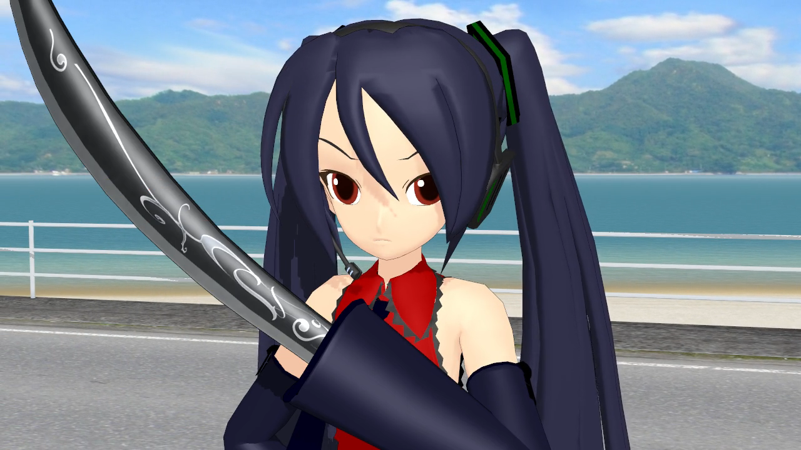
ついにレンとミクの前に姿を現した新型クローン。 予想通り、レンたちを襲撃してきた彼女であったが、急に倒れこんでしまった。 彼女のことを無視できないレンは、新型クローンをレミリアの研究所に担ぎ込んだ。 レンたちは、新型の処置を行った藤乃から彼女の体に施された悲惨かつ驚嘆に値する改造を知ることとなる。 その裏では、フォルティア公国の大胆な計画が動き出そうとしていた。
動画リンク(ニコニコ動画)Season 4 第六話 ～source～
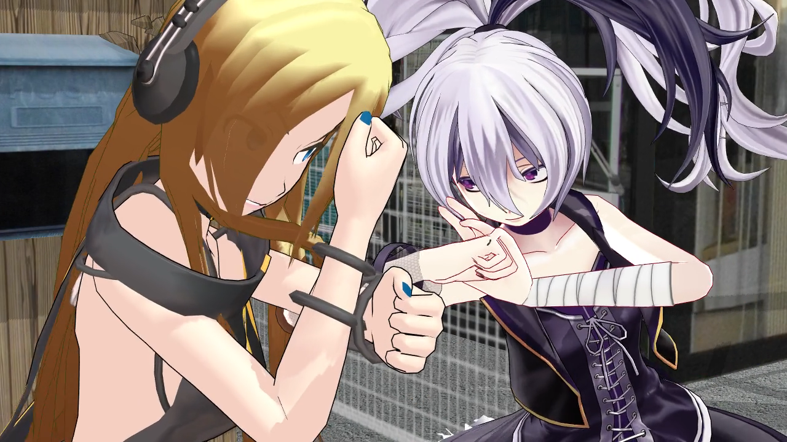
新型クローン、Code Null を失ったフォルティア公国は、戦争開始もいとわない過激な要求をレンたちの国に突き付けていた。 一方、ハイペリオンはこの要求をフォルティア公国の焦りの表れであると推測し、これを利用した情報収集を試みる。 情報収集任務を命じられたLilyは現地で怪しい人物を発見し、戦闘へと突入する。 この戦闘の行く末は？ そして、Lilyはフォルティア公国の元凶へとつながる情報を手に入れることはできるのか？
動画リンク(ニコニコ動画)Season 4 第七話 ～抵抗～
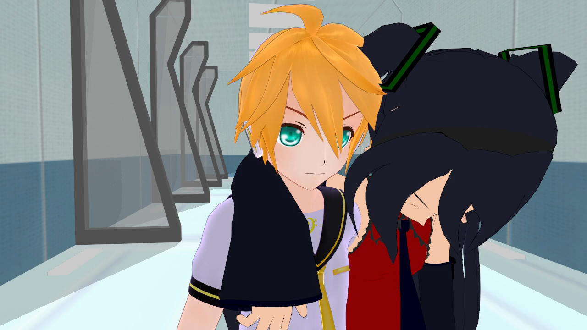
データ解析により、新型クローンについての新たな情報を得た藤乃は、それを伝えるためにレンたちを研究所に呼び出した。 その情報は、新型クローン製造のご本尊に迫るものであった。 そんな中唐突に新型クローンが目を覚まし、能力を解放した。 それを迎え撃ったミクとの戦闘に突入する。 その戦闘、誰もが予想だにしない方向へと事態をいざなうトリガーとなった。
動画リンク(ニコニコ動画)Season 4 第八話 ～未来～(前編)
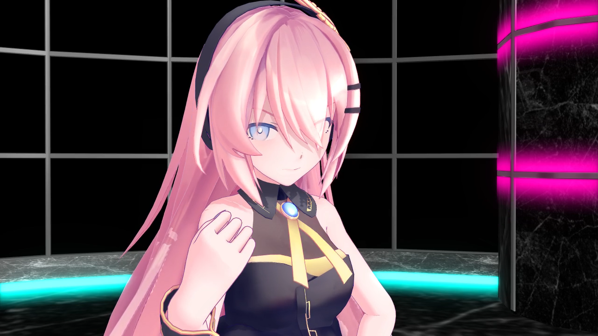
藤乃の情報によって、一連の騒動の元凶の居場所が明らかとなった。 レン達・ハイペリオン・旧スアロキン一行は、フォルティア公国との戦争を止めるため、そしてミク達から脅威を取り去るためにフォルティア公国最大級の軍事基地へと向かう。 そして、この騒動は彼ら以外にもあらゆる組織を動かしていた。 軍事基地へと突入したハイペリオンと旧スアロキンの前に立ちはだかったのは、軍事大国という肩書に恥じない兵器の大群であった。 一方、レン・ミク一行はすべての元凶である研究者、巡音ルカと対峙する。 かつてないほど多くの人間を巻き込むこの戦闘の行方は？ そして、新型クローンが造られた目的とは？
動画リンク(ニコニコ動画)